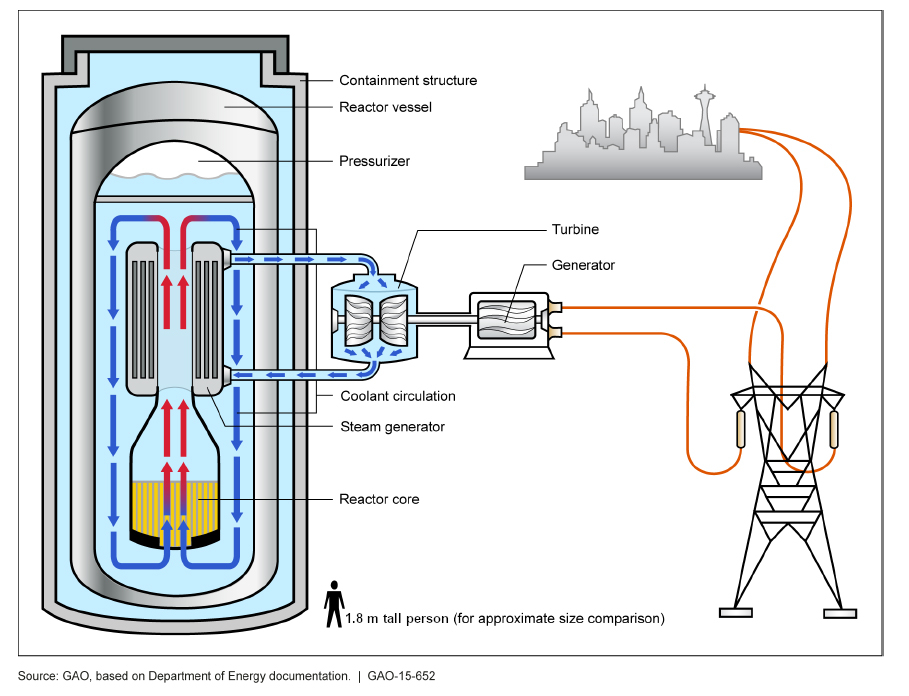

A scaled-down reactor primary loop with a mock fuel bundle: passive reactor cooling, at bench scale. Led by build team leads Aidan Woods, Justin Hooey and Ella Adair, with a role for every sub-team.
Chosen by our general members at the first General Members Meeting on September 24, 2026, with 38 votes, ahead of Gamma-Ray Imaging (23) and the Nuclear Cleanup Rover (12). Everything on this page is the build team's tentative plan and may change as the design matures.
Why This Project ↓
The Case
Why This Project?
01
Real Industry Work
Scaled loop tests are how labs and vendors check reactor cooling. The safety cases for reactors licensed in Canada depend on this kind of analysis.
02
Topical
SMRs like the BWRX-300 at Darlington are being built today. Passive cooling is central to their safety design.
03
Every Sub-Team Has a Role
Mech, Software, Elec, Research and Materials each own part of the loop, and every part is needed for it to work.
04
Multifaceted
The calculations, CFD and reports are useful even without the build. The build is how we check them.
The Build
What We're Building
A scaled-down reactor primary loop with a mock fuel bundle.
Primary mode: passive (no pump). Hot water rises, cools, and sinks back down (natural circulation), and that alone keeps the "fuel" cool.
Backup: a pump sits on a bypass line with a check valve and only starts if the loop overheats or flow stalls.
Sensors along the loop measure temperature, flow and heater power, so we can compare test data with our calculations and simulations.
Keeping It Achievable
Scope
In Scope
Mock fuel bundle / heated section
Elevated reservoir
Cooling (heat-rejection) section
Backup pump on a bypass line
Temperature, flow and power sensing
Data logging and heater control
E-stop, pump auto-start, heater trip
Hand calcs, CFD and 3 reports
Out of Scope
Steam generator and secondary steam cycle
Turbine and power generation
Real nuclear fuel or radiation
High pressure: we stay near atmospheric
Water above 75 °C, or any boiling

A full SMR, for reference. We're building the primary cooling loop around the core, not the steam generator, turbine or generator.
Design Process
Design, Simulate & Test
01
Calculations
Python
Determine design parameters for CFD simulations
Scale the loop from a CANDU / BWXT reference
Design CAD model
02
CFD Simulation
Software TBD
Use industry computational fluid dynamics software to simulate the loop design
Verify design parameter calculations
Visualize simulation data for comparison to measurements
03
Validate with the Loop
Tools TBD
Record sensor data
Plot test data against CFD and calculations
Explore and explain differences from the simulation
Generate key reports from data and simulations
Approximate Design Specifications
The Physical Build
1–3 m
Loop elevation
≤ 75 °C
Water hard cap
250–500 W
Heater, wall outlet
~$1,315
Current BOM estimate
Frame
Aluminum extrusion clamped to a workbench (no drilling into the bench). The cooler sits well above the heater.
Piping
3/4" modular copper, CPVC or silicone rated to at least 80 °C (not standard PVC). Wide, smooth pipe keeps friction low for passive flow.
Heater
Resistive wire spread along the heated section, switched by a solid-state relay. Small cartridge heaters concentrate too much heat and would boil water at their surface.
Expect roughly +$100–200 on the BOM for a low-flow meter and a check valve. The working range is $1.5k–$3k with a better flow meter and pressure sensors. CAD, CFD and software are free. Empty weight and lab space are still to be determined.
What We'll Deliver
Deliverables
Three technical reports, each owned by two sub-teams, backed by a working loop.
Thermal-hydraulics report (Mech + Software)
Passive flow rate, pressure drop and heat transfer, with CFD checked against test data. Also covers passive vs. pumped operation.
Reactor physics report (Research + Mech)
Heat generated in the fuel bundle, including traditional CANDU fuel and reprocessed fuel mixes, and how that maps to our heater power.
Safety & control systems report (Elec + Software)
Temperature limits, backup-pump auto-start, heater trip and emergency stop.
Plus: full CAD model, working test loop, and a data acquisition system.
Select a sub-team to see its role →
Sub-Team Roles
Mechanical
CAD of the loop and frame in Onshape.
Fabricate and assemble piping, reservoir and heat-transfer surfaces.
Thermal-hydraulic CFD with Software.
Yes, We Care About You
Safety & Success
Safety
Layered temperature limits. Run at 60 °C or below. Backup pump starts at 65 °C, heater trips at 75 °C. Avoid creating steam.
Heater surface. Heat spread out so the surface stays under 95 °C, with a hardware thermal cutoff.
Near-atmospheric pressure. A vented reservoir absorbs the ~2.5% thermal expansion. Tubing is rated to at least 80 °C.
Emergency stop. A physical E-stop cuts the heater. Passive flow keeps cooling it with no power needed.
Electrical. SSR-switched heater and pump, fused circuits, and electronics enclosed away from water.
Burns & procedures. Hot sections marked, gloves on, and a written safety plan used at every test.
Success Conditions
Passive circulation. Removes full heater power with no pump. This is the normal mode.
Backup pump failover. Pump starts automatically when the 65 °C limit is hit.
Within limits. Hot leg at or below 60 °C, heater surface below 95 °C, no boiling.
100% leak-free. No leaks at operating temperature.
1 reading / second. Temperature, pressure and flow logged continuously.
Safety plan in use. Reports and procedures used during every test.
Tentative · October to March
The Timeline
Onboarding Oct
Calcs & CAD Oct – Nov
Design Freeze Nov
Fabrication Jan
Assembly Feb
Testing & Reports Mar
What You'll Take Away
Learning Opportunities
What You'll Learn
CAD in Onshape, plus design for manufacturing (tolerances, 3D-print fits)
Fluid mechanics: natural circulation, head loss, pumps
Heat transfer and heat exchanger basics
Scaling a real system down to lab size, and why that's hard
CFD with OpenFOAM and ParaView
Python data acquisition on a Raspberry Pi
Control and safety circuits: SSRs, fuses, LTspice
Scaling Up If We Have the Budget
More and better sensors, including pressure
Simulate loss-of-power accidents
Emergency core cooling injection
A second, actively cooled loop
Test different fuel-mix heat profiles
The Framework
Project Philosophy
All potential QNET projects must satisfy our three-pillar Project Charter before moving forward.
01
Teaches Nuclear Concepts
Providing members with tangible, hands-on experience with nuclear physics and engineering principles.
02
Involves Multiple Disciplines
Nuclear engineering is vastly interdisciplinary — our projects must reflect that breadth across teams.
03
Achievable Within Scope
Scoped appropriately to be completed safely and effectively within timeline and resources by a student team.
Independent Studies
Materials Studies
Led by Materials Lead Noah Miggiani, the Materials sub-team runs its own studies independent of QNET's flagship build. As of July 1, 2026, the team has completed preliminary research to establish three potential study tracks.
About the Materials Team: This specialized branch of QNET bridges the gap between mechanical design and nuclear physics. While the other sub-teams focus on project design and build, the Materials team focuses on simulations and virtual testing — modeling atomic-level interaction, evaluating material degradation, and predicting how structural materials behave under intense reactor conditions.
Students in this branch can be expected to:
Utilize industry-standard ion irradiation modeling software like SRIM to predict radiation depth, energy deposition, and primary material damage production in critical components.
Research and analyze reactor materials to safely predict how they will respond to operational stresses.
Model degradation, microstructural responses, and other mechanical properties and effects.
Select a study track to explore →
Materials Study Track
Ion Surrogates for Neutron Radiation Damage
This track compares the difference in neutron beams and ion beams in both their recoil spectra and energy deposition partitioning. By comparing which locally-available ions produce spectra and energy-partitioning profiles that most closely mimic real neutron damage, researchers can identify better surrogates for running more accurate experiments with ions rather than neutrons — which are harder to use precisely, as they carry no charge. Our team plans to utilize SRIM simulations, as it is uniquely suited for capturing the recoil spectra and doesn't require any physical experiments aside from experimental validation.